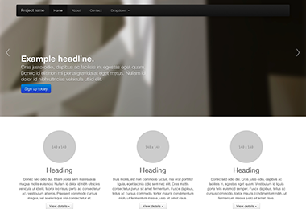

1. دانلود فریم ورک
قبل از دانلود، مطمئن شوید که یک ویرایشگر متن مناسب در اختیار دارید (ما Aptana را به شما پیشنهاد می کنیم.) در اینجا درباره فایل های منبع توضیحی نمی دهیم اما این فایل ها نیز برای دانلود در اختیار شما قرار دارند. ما کار خود را با فایل های آماده ی بوت استرپ آغاز می کنیم.
دانلود فایل های آماده
سریعترین راه برای شروع کار با بوت استرپ: فایل های تصویری، CSS و JS فشرده شده ی فریم ورک را دریافت کنید. هیچ مستندات یا فایل های منبعی در این فایل وجود ندارد.
دانلود فایل های منبع
فایل اصلی را به همراه کلیه ی فایل های CSS و جاواسکریپت، به همراه یک نسخه آفلاین از مستندات را از طریق این لینک از گیت هاب دریافت کنید.
2. ساختار فایل ها
داخل فایل دانلودی این محتوا و ساختار فایل را خواهید یافت که به شکلی منطقی اجزای اصلی را دسته بندی کرده است و فایل ها را به شکل فشرده شده و آماده در اختیارتان قرار می دهد.
بعد از اتمام دانلود، فایل را از حالت فشرده خارج کنید تا فایل ها و پوشه های آماده بوت استرپ را ببینید. ساختاری اینچنین در اختیار شما قرار خواهد گرفت:
bootstrap/
├── css/
│ ├── bootstrap.css
│ ├── bootstrap.min.css
├── js/
│ ├── bootstrap.js
│ ├── bootstrap.min.js
└── img/
├── glyphicons-halflings.png
└── glyphicons-halflings-white.png
این ساده ترین حالت بوت استرپ است: فایل های آماده ای که می توان آنها را داخل پوشه ی هر پروژه ی وب سایتی کپی کرد. ما فایل های آماده ی CSS و JS bootstrap.*, به همراه فایل های فشرده شده ی CSS و JS bootstrap.min.* را در اختیار شما قرار دادیم. تصاویر نیز با استفاده از ImageOptim, که یک نرم افزار تحت سیستم عامل مکینتاش است، فشرده شده است.
لطفا توجه داشته باشید، برای اینکه کلیه پلاگین های جاواسکریپت به درستی کار کند باید کتابخانه ی jQuery را نیز به صفحه خود اضافه کنید.
3. این فریم ورک شامل چه چیزهایی است؟
بوت استرپ شامل مجموعه ای از فایل های HTML, CSS و JS است که با آنها می توان کارهای مختلفی انجام داد، اما می توان این فایل ها را به طور خلاصه به این شکل دسته بندی کرد.
بخش مستندات
تعریف ساختار
سبک های CSS کلی برای تگ body و یکسان سازی متن ها و پس زمینه ها، سبک لینک ها، ساختار شبکه (grid)، و دو طرح ساده.
دستورات پایه ی CSS
سبک های کلی برای تگ های رایج HTML همچون موارد مرتبط با تایپوگرافی، کدها، جدولها، فرم ها و دکمه ها. همچنین Glyphicons که یک مجموعه آیکون عالی و کوچک است نیز در این بخش گنجانده شده است.
اجزا
سبک های CSS پایه برای اجزای رایج در طراحی همچون tab ها، علامت ها، نوار پیمایش (navigation bar)، پیغام های هشدار، بخش سرصفحه (header) و بسیاری از بخش های دیگر
افزونه های جاواسکریپت
این بخش شبیه به بخش قبلی (اجزا) است و این افزونه های جاواسکریپت اجزای پویایی هستند که بخش هایی همچون tooltip ها، popover ها، modal ها و بخش های دیگه را می سازند.
فهرست اجزا
بخش اجزا به همراه افزونه های جاواسکریپت، این عناصر را برای استفاده در واسط کاربری ایجاد می کنند:
- گروه دکمه ها (Button groups)
- دکمه های دارای لیست پایین افتادنی (Button dropdowns)
- تب های ناوبری (Navigational tabs), علائم (pills), و فهرست ها
- نوار پیمایش (Navbar)
- لیبل ها (Labels)
- نشان ها (Badges)
- سرصفحه ها (Page headers) و بخش ویژه (hero unit)
- تصاویر بند انگشتی (Thumbnails)
- هشدارها (Alerts)
- نوار پیشرفت (Progress bars)
- پنجره های شناور (Modals)
- لیست های پایین افتادنی (Dropdowns)
- Tooltips
- Popovers
- Accordion
- Carousel
- Typeahead
در ادامه این راهنما، ما به هر کدام از این اجزا خواهیم پرداخت و جزئیات کاملی را برای هر کدام ارائه می دهیم. اگر اکنون به استفاده از این بخش ها نیاز دارید به مستندات مربوط به این اجزا مراجعه کنید تا شیوه استفاده و همچنین شخصی سازی آن را فرا بگیرید.
4. قالب پایه ی HTML
با کمی مقدمات و پرداختن به اصل مطلب می توانیم بر روی شیوه ی استفاده از بوت استرپ تمرکز کنیم. برای این منظور از یک قالب پایه ی HTML استفاده خواهیم کرد که تمامی مواردی را که در بخش ساختار فایل ها آمده است را شامل می شود.
حال در اینجا به فایل پایه ی HTML امان نگاهی می اندازیم:
<!DOCTYPE html>
<html>
<head>
<title>Bootstrap 101 Template</title>
</head>
<body>
<h1>Hello, world!</h1>
<script src="http://code.jquery.com/jquery-latest.js"></script>
</body>
</html>
برای اینکه این فایل را به یک فایل پایه ی بوت استرپ, تبدیل کنیم تنها کافیست که فایل های CSS و JS لازم را به آن اضافه کنید:
<!DOCTYPE html>
<html>
<head>
<title>Bootstrap 101 Template</title>
<!-- Bootstrap -->
<link href="css/bootstrap.min.css" rel="stylesheet" media="screen">
</head>
<body>
<h1>Hello, world!</h1>
<script src="http://code.jquery.com/jquery-latest.js"></script>
<script src="js/bootstrap.min.js"></script>
</body>
</html>
خوب فایل پایه ی ما آماده است! با اضافه کردن این دو فایل، می توانید توسعه هر سایت و یا اپلیکیشنی را با بوت استرپ آغاز کنید.
5. مثال ها
با چند مثال از طرح های مختلف سعی می کنیم اندکی از طرح پایه و ساده، فاصله بگیریم. ما همکاران را تشویق می کنیم که از این مثال ها به عنوان طرح نهایی استفاده نکنند و تنها اینها را به عنوان مثال تمرینی به شمار آورند.
-

قالب پایه
یک سند HTML که همه فایل های CSS و جاواسکریپت مربوط به بوت استرپ به آن اضافه شده است.
-

طرح فروشگاه ساده
این طرح دارای یک بخش بزرگ و ویژه برای نمایش پیغام اصلی و سه عنصر دیگر است که اهمیت کمتری دارند.
-

طرح انعطاف پذیر (fluid)
این طرح از سیستم تطبیق پذیر جدید ما استفاده می کند و سیستم شبکه ای انعطاف پذیری را ایجاد کرده است.
-

طرح فروشگاهی باریک
طراح باریک و سبک فروشگاهی برای پروژه یا تیم های کوچک.
-

ورود
یک فرم ورود به سایت اختصاصی به همراه کنترلهای فرم بزرگتر و طرحی منعطف.
-

پاورقی چسبان
چسباندن یک پاورقی به پایین پنجره قابل دید کاربر با استفاده از بوت استرپ
-

Carousel jumbotron
A more interactive riff on the basic marketing site featuring a prominent carousel.
قدم بعدی چیست؟
Head to the docs for information, examples, and code snippets, or take the next leap and customize Bootstrap for any upcoming project.
Visit the Bootstrap docs Customize Bootstrap